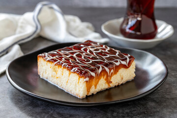

Trileće
Home

Opis:
Trileće je biskvit, ki je napojen z mlekom ter po vrhu premazan z karamelo.
ZA BISKVIT:
- 6 jajc
- 100g sladkorja
- 200g moke
- polovica pecilnega praška
- 1 vanilijin sladkor
ZA PRELIV:
- 400ml sladke smetane
- 300ml kondenziranega mleka
- 800ml mleka
ZA PREMAZ:
Priprava:
-
Beljake stepamo in postopoma dodajamo sladkor ter vanilijev sladkor.
Ko so dobro stepeni,dodajamo rumenjake enega za drugim,
premešamo in nato počasi dodajamo moko, pomešano s pecilnim praškom.
Pri dodajanju moke mešalnik obrnemo na najnižjo hitrost in le nežno mešamo.
-
Zmes vlijemo v pekač, obložen s peki papirjem,
in pečemo približno 20–25 minut pri 180 stopinjah.
Biskvit pustimo, da se malo ohladi,
nato ga vzemimo iz pekača in ga na več mestih prebodemo z nožem.
V pekač vlijemo sladko smetano in nanjo položimo biskvit obrnjen na glavo (del, ki je bil zgoraj, gre zdaj dol).
Pustimo počivati približno 10 minut, nato zmešamo mleko in kondenzirano mleko ter to prelijemo čez biskvit od zgoraj.
Pustimo nekaj časa počivati, da mleko vpije sladkost, nato pa premažemo s karamelno kremo.
Dobro ohladimo in uživamo v tej čudoviti torti.
-
Opomba: za to torto je zelo pomembno, da dobite dobro karamelno kremo,
saj je ključna sestavina za čudovit okus torte.
Uporabljam karamelo za slaščice v polkilogramskih pločevinkah.
Pekač, v katerem sem spekla torto, je 20x30 ...!!